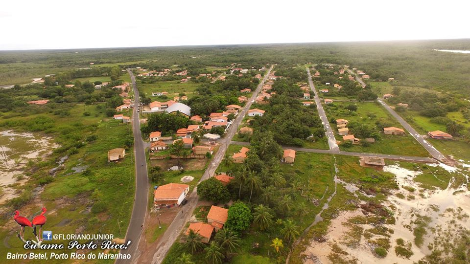
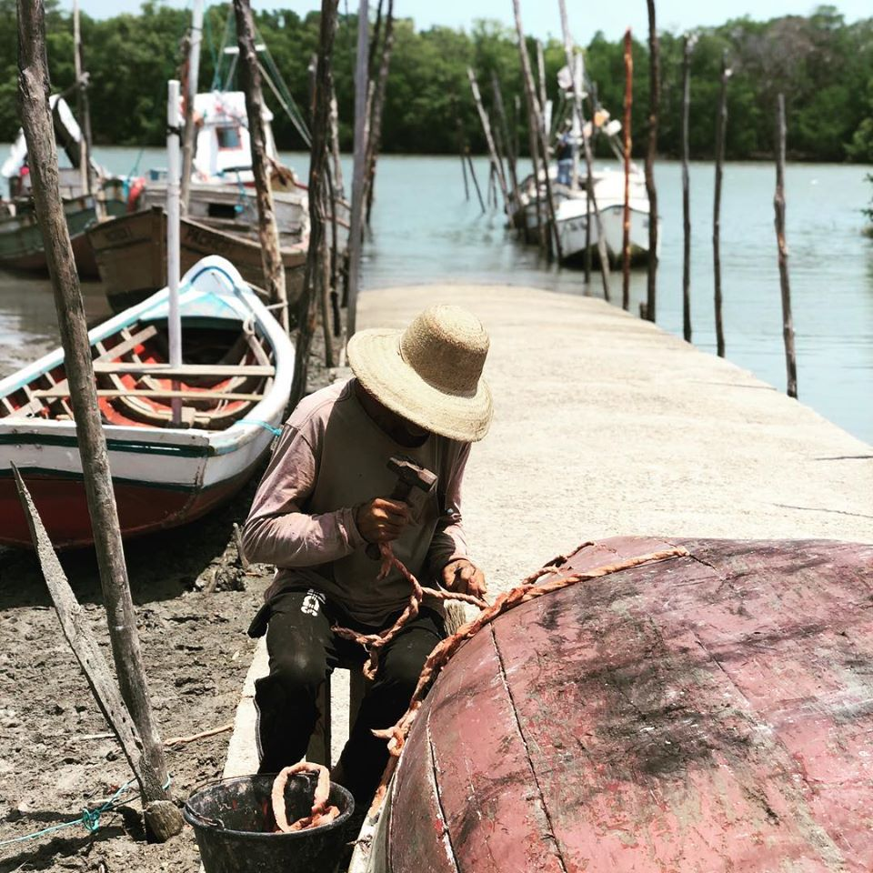

CONHEÇA PORTO RICO - MA. UM OTIMO LUGAR PARA RESTABELECER AS FORÇAS
VISITE PORTO RICO DO MARANHÃO
NOSSA HISTÓRIA
Porto Rico do Maranhão é originário do município de Cedral, cujo território ocupava, foi criado pela lei nº 6.134, de 10-11-1994, publicada no Diário Oficial do Estado na mesma data.
Em fase de estruturação, o município tem como primeiro prefeito, o Dr. Luís Henrique Diniz Fonseca, eleito de 1996, do PMDB. Assumiu o seu mandato em 01-01-1997, dando início de fato à existência de Porto Rico do Maranhão.
Porto Rico do Maranhão era inicialmente, apenas uma praia, com pequeno porto, Quebra Bico, onde se desenvolvia forte atividade pesqueira. Transformou-se potencialmente em próspera vila, homenagear seus país de origem, a denominação de Porto Rico,

logo aceita e adotada por todos.
Uma segunda versão para a origem do nome "Porto Rico" é contada pelos seus mais antigos moradores, como sendo orginário da atividade pesqueira naquele porto, que atraia moradores de Mariscos povoados vizinhos, de municípios como Tutóia e de outros Estados como Piauí e Ceará, pela grande quantidade de peixes e mariscos ali também já havia se chamado Colo Bico, para Porto Rico, que hoje é a sede do município de Porto Rico, que hoje é a sede do município de Porto Rico do Maranhão.
Gentílico: porto-riquense
Formação Administrativa
Elevado à categoria de município e distrito com a denominação de Porto Rico do Maranhão, pala lei estadual nº 6134, de 10-11-1994, desmembrado de Cedral. Sede no atual distrito de Porto Rico.

Gentílico: porto-riquense
Constituído do distrito sede. Instalado em 01-01-1997. Em divisão territorial datada de 15-VII-1997, o município é constituído do distrito sede.
Assim permanecendo em divisão territorial datada de 2005.
Fonte:IBGE